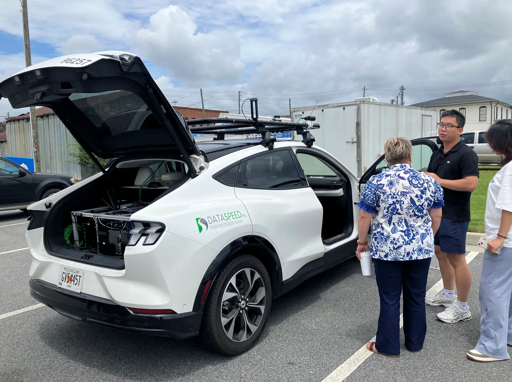

Downtown Hawkinsville
Everyday trips between neighborhoods, shops, and community destinations (CREAT).
TRAVELS · Georgia
In Hawkinsville and Pulaski County, Georgia, UGA is connecting local mobility priorities with route planning and infrastructure evidence for the TRAVELS program.
Candidate service routes · Planning and infrastructure assessment
Handong Yao’s UGA team met county and city leaders on July 13, 2026, discussed a route linking residential areas with the regional hospital, and collected data for HD mapping.

From needs to evidence
Discuss everyday access and healthcare travel with local officials, then connect those needs to candidate service concepts.
Survey the Hawkinsville route and collect data for an HD map and LiDAR point cloud, documenting the physical road environment.
Publish an interactive viewer that connects lane geometry with route annotations, supporting inspection and discussion of rural driving challenges.
Candidate service concepts
Routes under planning and assessment.
Everyday trips between neighborhoods, shops, and community destinations (CREAT).
Healthcare access between the hospital and nearby residential and community areas (HONR-AV).
Short recreation, tourism, and event trips linking the park, downtown, and nearby neighborhoods (TEAS).
Explore the field data
Explore the recorded route and infrastructure challenges in the interactive viewer. The associated release provides the Lanelet2 HD map and LiDAR point-cloud data.